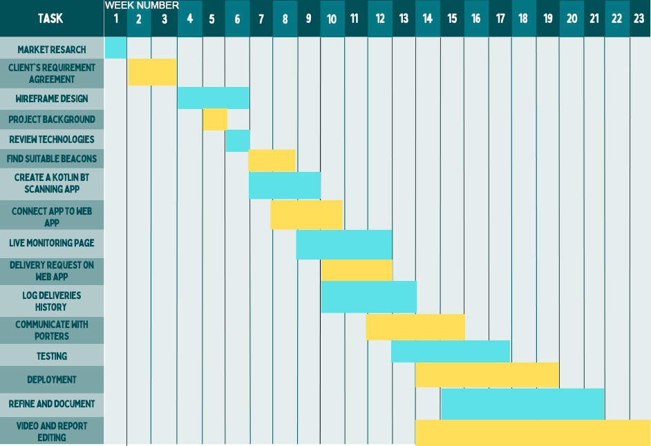

Requirements
The process of defining and refining project requirements.
Contents
Contents

Project Abstract
Problem Statement
Currently this is achieved with human porters that load drones slowly with lack of communication. There are significant inefficiencies with the system. Requests are sent to all porters and the first to respond is assigned the delivery. This doesn’t account for porter proximity to parcels nor availability. It can also be overwhelming to be pinged for every delivery.
The Solution
For our solution, porters will be tracked, allowing optimal task assignment based on proximity and availability, so that there are no drones waiting to carry out deliveries.
Achievement and Impact
Project Video
Development Team
Project Management
